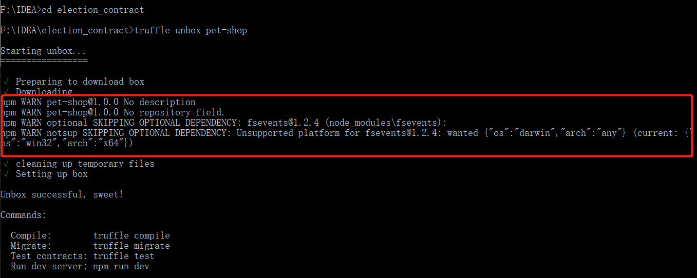
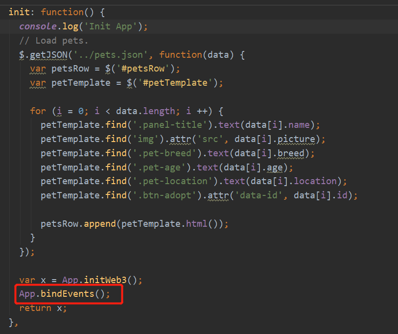
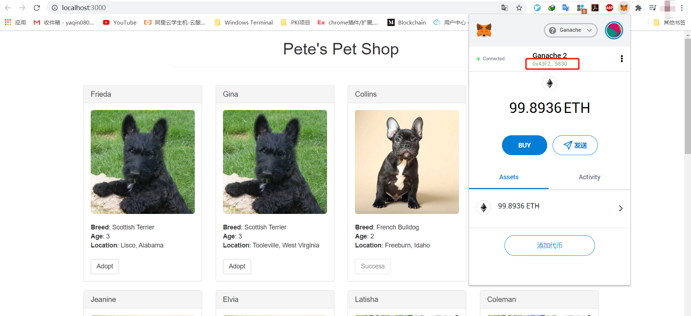
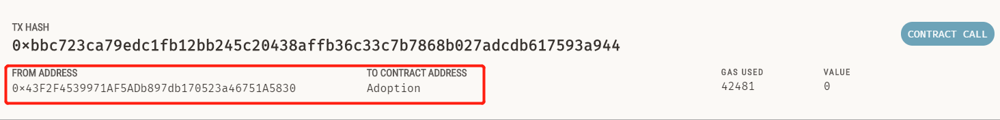

请允许我先抱怨一下，我本来想找出现问题的解决方法，才去搜的 baidu，之后全是一群把教程翻译了搬到国内的，关键是有的人从文章中也没透露出这个是搬运，总之有点难受。哎，事实证明国外学术气氛确实比国内好，希望以后能少点搬运工多点发现问题解决问题的文章吧 orz 这里把我遇到的问题和解决办法写一下，如果有人也在看这篇教程且出现了问题，也希望能帮助到他们
官方教程点这里，想学 DApp 的应该需要了解该教程。如果不想看官方英文教程的 baidu 关键词 "pet-shop tutorial adopt button" 看搬运的翻译版
环境：
Truffle v5.1.14 (core: 5.1.14)
Solidity v0.5.16 (solc-js)
Node v12.18.2
Web3.js v1.2.1
# 1. "truffle unbox pet-shop" 警告："Unsupported platform for fsevents@1.2.4"

具体警告如下：
npm WARN pet-shop@1.0.0 No description
npm WARN pet-shop@1.0.0 No repository field.
npm WARN optional SKIPPING OPTIONAL DEPENDENCY: fsevents@1.2.4 (node_modules\fsevents):
npm WARN notsup SKIPPING OPTIONAL DEPENDENCY: Unsupported platform for fsevents@1.2.4: wanted {"os":"darwin","arch":"any"} (current: {"os":"win32","arch":"x64"})
上述警告应当只有 Windows 操作系统才会出现，fsevents 是苹果系统的可选依赖，warning 错误，是因为 mac 下需要 fsevents，这里是在 windows 环境，所以可以忽略这个警告。事实上，npm 大部分的 WARN 都是可以忽略的，这里我也只是确认的一下
# 2. "truffle test" 报错："Cannot destructure property 'body' of 'undefined' as it is undefined"
版本问题，solc 版本在 5.1.10 一下不会报错。不过由于我不准备重安 truffle，所以后续没进行 test 测试而是直接跳过（或者改用 js 进行 test 测试也可）
# 3. 运行 lite 后点击 adopt 按钮没有效果，也不会弹出 Metamask
毕竟是几年前的老教程了，在 IDEA 中打开 App.js 也会发现执行点击事件的 bindEvents 并没有被调用，需要手动改一下代码，把 bingdEvents 添加进去就可以了

另：其实 js 文件的大致的书写方式也发生了变化，但是这里我实践这个教程只是为了了解大致框架，所以并没有过多的纠结代码问题，能实现目标的应用效果即可。
# 最终效果
Metamask 与 Ganache 链接，localhost:3000 成功显示

点击 Adopt 按钮后会申请执行合约，Ganache 交易列表中出现 Ganache2 账户的合约调用交易

# 参考链接：
https://blog.csdn.net/qq_39313596/article/details/81158660
https://github.com/trufflesuite/truffle/issues/2834